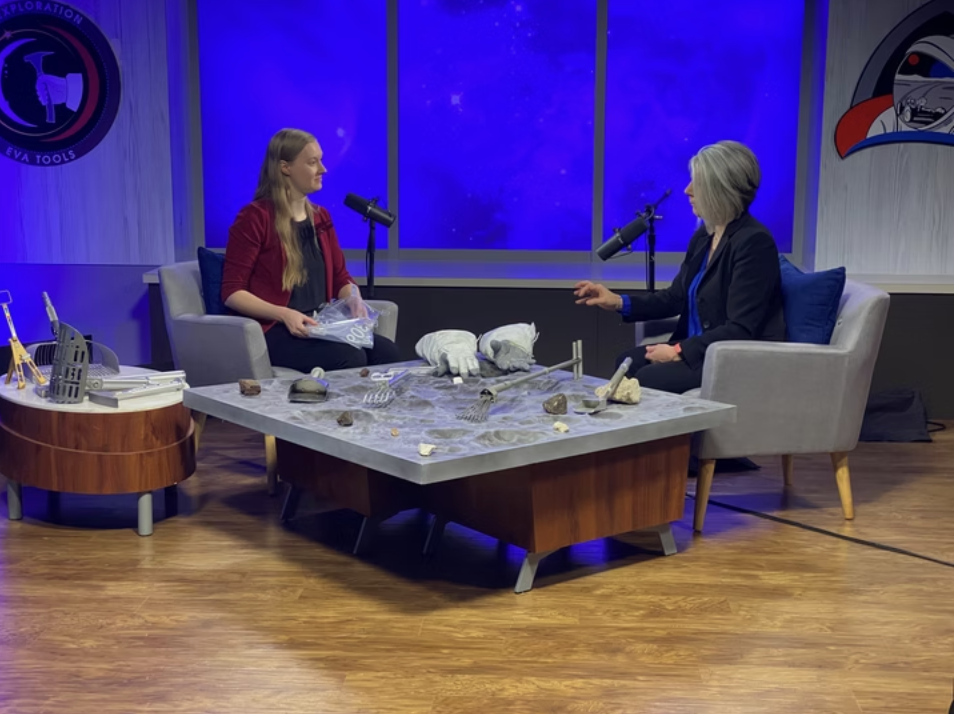
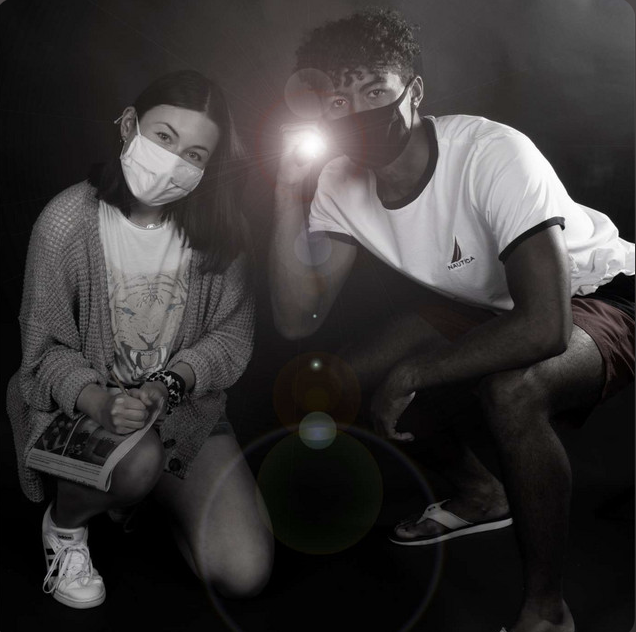

— Selected Projects

Documentary Series
Exploring the Moon
A limited series that explores the technology and people behind NASA's Artemis Missions.
View Project →
Short Film
What's Behind This Door
A mini series on social media that highlights different areas of Johnson Space Center.
View Project →
Audio Production
Reality Check
A 4-episode limited sci-fi series that was made through the Viking Fusion production team.
View Project →
Directing
Martha's Mysteries
A fictional murder mystery audio theater podcast.
View Project →